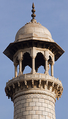

Costing an equivalent of $827 million in today's economy, the Taj Mahal is one of the most beautiful works of architecture that was ever created, and it still amazes visitors of today. Commissioned by the Emperor Shah Jahan as the resting place of his favorite wife Mumtaz Mahal, it was built by the Yamuna River in Agra, India and took about 16 years to fully complete. It was built almost 400 years ago, yet it is still considered one of the best works of Mughal architecture to this day. Since it incorporates a Mughal style, the Taj Mahal is quite diverse with features belonging to Islamic, Persian, and Indian architecture, but it consistently keeps one feature throughout, geometric art. The Taj Mahal is a literally a manifestation of geometry in a physical form, and is the epitome of geometrical beauty in architecture. With patterns, symmetry, and fractals everywhere, the Taj Mahal looks like something from a geometer’s dream and these features of geometry create a powerful beauty that is very pleasing to the minds’ of the viewers.
In order to understand the comprehensive geometry of this marvelous work of architecture, one must first have a good overview of the building’s features. The centerpiece of the Taj Mahal is the marble tomb. Belonging to the raised tomb variety, the tomb stands on top of a square platform or plinth, and its base is essentially a cube with each edge that is perpendicular to the ground cut off in a way that makes an octagonal footprint, creating an intriguing, complex form of symmetry from multiple planes of perspective. One of the most noticeable features of the tomb is the marble dome that is on top of it. With a height almost equal to the base of the building (~115 feet), the dome is spectacular to view, and is one of the major reasons why this work is so famous. The onion-shaped dome is also decorated with a lotus design on the top and a finial that was originally gold, but replaced by a bronze version about a century ago. The finial is interesting because it was inspired by both traditional Persian and Hindu decorative elements. Additionally, the finial has a moon on top, a very common feature of Islamic decoration. The tomb also has 4 domes on top of each corner that look like scaled down versions of the main tomb (with different finials). The 4 domes are especially pleasing because they almost create a fractal pattern around the top of the tomb since they repeat the same style of the main dome. The tomb also has a minaret on each corner of the plinth. Each minaret is 138 feet high and they all have an 8 sided pavilion which resembles the design of the tomb itself. Interestingly, the top of the tomb has small “posts” surrounding it that resemble the minarets themselves, which also contributes to the aforementioned fractal design of the Taj Mahal.
One must pass through several beautiful features of the complex to get to the tomb. One of which is The Great Gate, serving as the entrance to the complex, it was mostly built out of red sandstone and its archways mirror those of the tomb’s. It also incorporates the same kind of calligraphy that decorates the tomb. Because these features are common with the tomb itself, The Great Gate serves as a magnificent introduction to the features of the tomb for the visitors. One of the most beautiful features of the complex is the garden that spans approximately 24 acres. The garden is full of symmetry with equal-area sections that are all divided into 4 more sections creating 16 flowerbeds. Additionally, the garden contains a reflecting pool that catches the eyes of all the viewers.